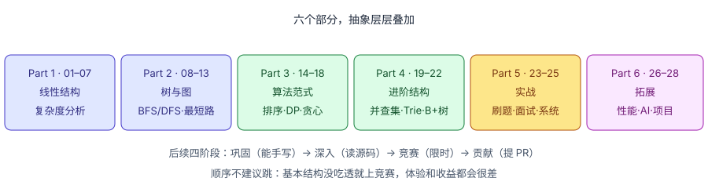
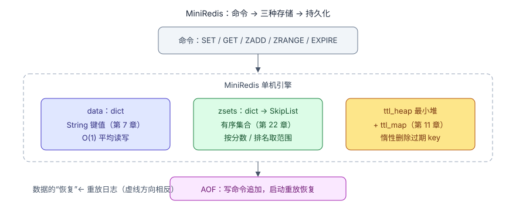

学习路线与综合项目
最后一章不再引入新概念：先诚实地自测掌握程度，再规划下一步，最后用 MiniRedis 把哈希表、跳表、最小堆组合成一次可运行的工程实践。
回望这条路
从数组到学习型索引、从复杂度分析到系统设计，28 章其实在反复做同一件事：把一个具体问题拆成一组操作，再选择能以最小代价完成这些操作的结构。回望一下主线的分层：

- Part 1（01–07）：数组、链表、栈、队列、哈希表；复杂度分析是第一把尺子。
- Part 2（08–13）：二叉树与遍历、BST 及平衡树、图的 BFS/DFS、最短路与最小生成树。
- Part 3（14–18）：排序、递归分治、回溯、动态规划、贪心——训练“怎么想解法”。
- Part 4（19–22）：并查集、线段树、Trie、跳表、B+ 树——工程中真正在用的结构。
- Part 5（23–25）：刷题方法论、面试高频题、系统设计——训练“怎么用”。
- Part 6（26–28）：性能分析、AI 交叉，以及本章的综合项目。
但读完不等于掌握。最后一章不学新概念，只做三件事：检验自己、规划下一步、动手写一个真东西。
能力自测
下面每问对应本课的一个核心知识点。请不要凭印象，而是真的试着在白板上写一遍或说一遍；能脱稿完成才算“能”。答不上来就翻回对应章节复习。
| 自测问题 | 对应章节 |
|---|---|
| 能用递归 / 迭代两种方式写二分查找，并说清边界收缩吗？ | 第 2、15 章 |
| 能手写 LRU 缓存（哈希表 + 双向链表）吗？ | 第 4、7、24 章 |
| 能解释为什么快排实践中常比归并快（缓存局部性）吗？ | 第 14、26 章 |
| 能完整分析一道 DP 题（状态 → 转移 → 边界 → 空间优化）吗？ | 第 17 章 |
| 能解释 B+ 树为什么适合数据库索引（扇出 × 树高 × 磁盘 I/O）吗？ | 第 22 章 |
| 能手写带路径压缩 + 按秩合并的并查集吗？ | 第 19 章 |
| 能用 Python 模拟哈希表并处理冲突（开放寻址 / 链式）吗？ | 第 7 章 |
| 能解释 Top-K 为什么用大小为 k 的堆而不是全排序吗？ | 第 11 章 |
| 能写出带优先队列优化的 Dijkstra，并说明它为何要求非负权吗？ | 第 13 章 |
| 能解释动态数组扩容为什么是摊还 O(1)，而不是每次 O(1) 吗？ | 第 3、26 章 |
诚实比“全打勾”有用。每找到一个“不能”，就多一个明确的下一步：回到对应章节，把代码手写一遍、把测试跑一遍，直到它变成“能”。
进阶学习路线
学完本课只是一个起点。下面四阶段从“巩固”到“贡献”，时长仅为大致参考（因人而异），关键是不要跳阶。
| 阶段 | 目标 | 关键行动 |
|---|---|---|
| 一、巩固 | 每个结构都能脱稿手写 | 重刷错题；为每个数据结构写实现 + 单元测试；挑几道最有感触的题写题解 |
| 二、深入 | 能解释标准库为何这么实现 | 读 CPython 的 list/dict 实现；读 Java Collections（ArrayList/HashMap/TreeMap）；读 Redis 的跳表与哈希表 |
| 三、竞赛 | 限时稳定做出中等题 | 定期参加周赛；赛后补题（尤其是没做出的那几道）；积累模板；在压力下限时练 |
| 四、贡献 | 能给开源项目提结构相关的优化 PR | 选一个感兴趣的项目，从性能类 issue 入手，提 PR 并接受 code review |
不要急着进“竞赛”：先把第一阶段做扎实——能手写 AVL 旋转、带路径压缩的并查集、堆排序。这些基本功才是后面所有阶段的基石。
综合项目：MiniRedis
Redis 被叫做“数据结构服务器”，因为它把每种数据类型都落到一种经典结构上。我们把三个最有代表性的能力组合成 MiniRedis：
- 字符串（SET/GET）→ 用
dict做基本 KV 存储； - 有序集合（ZADD/ZRANGE）→ 用跳表维护 (score, member) 有序；
- 过期机制（EXPIRE）→ 用最小堆管理最早到期的 key。
再加一个可选的 AOF 持久化：写命令追加到日志文件，启动时重放恢复数据。

完整的可运行实现与测试在仓库 examples/mini_redis.py 与 tests/test_mini_redis.py。下面挑出最关键的几段解释。
ZSet 的跳表核心
有序集合要同时支持“按分数插入”和“按排名 / 分数区间取一段”。跳表在链表之上加了多层索引，搜索时从顶层往下跳，期望复杂度 O(log n)——注意这仍是期望，而不是像平衡树那样的最坏保证。
插入时先在底层找成员是否存在；存在就先删旧节点（分数可能变了），再按每层前驱把新节点接入：
def insert(self, score, member):
node = self.head.forward[0]
while node: # 成员已存在：先删掉旧节点
if node.member == member:
if node.score == score: return
self.remove(node.score, member)
break
node = node.forward[0]
update = self._update_for(score, member) # 每层的前驱
lvl = self._random_level()
if lvl > self.level:
for i in range(self.level + 1, lvl + 1): update[i] = self.head
self.level = lvl
new_node = SkipListNode(score, member, lvl)
for i in range(lvl + 1):
new_node.forward[i] = update[i].forward[i]
update[i].forward[i] = new_node_update_for 是核心：从最高层向下，逐层找到最后一个“排在目标之前”的节点，记下每层的前驱，插入时直接在这些位置接线。分数更新要“先删后插”而不是就地改分，否则会破坏有序性。
TTL 与 AOF
过期机制用“最小堆 + 惰性删除”：堆里按过期时间排序，每个 key 的当前过期时间记在 ttl_map 里。每次读写前把堆顶已到期的 key 取出，只有当 ttl_map 里的值仍等于堆里那个时间戳时才真删——这样才能正确处理“过期时间被重新设置”的情况。
def expire(self, key, seconds):
expiry = self._clock() + seconds
heapq.heappush(self.ttl_heap, (expiry, key))
self.ttl_map[key] = expiry
def _expire_keys(self):
now = self._clock()
while self.ttl_heap and self.ttl_heap[0][0] <= now:
expiry, key = heapq.heappop(self.ttl_heap)
if self.ttl_map.get(key) == expiry: # 未被重新设置才真删
self.data.pop(key, None)
del self.ttl_map[key]不在堆里删除旧项（代价高），而是靠“堆顶时间戳与 ttl_map 不一致就忽略”的惰性策略——这是工程里常见的取舍。
AOF 持久化把每条写命令追加到文本文件，启动时逐行重放：
def _append_aof(self, command):
if not self.aof_path: return
with open(self.aof_path, "a", encoding="utf-8") as f:
f.write(command + "\n")
def _load_aof(self):
try:
lines = open(self.aof_path, encoding="utf-8").read().splitlines()
except FileNotFoundError:
return
for line in lines:
parts = line.split()
if not parts: continue
if parts[0] == "SET" and len(parts) >= 3:
self.data[parts[1]] = " ".join(parts[2:])重放只恢复数据、不再次写日志，否则会无限追加。测试里用临时文件验证了“写入 → 重开 → 数据还在”这个闭环。
扩展挑战
这份实现已经是一个可工作的 Redis 子集。想继续深入，可以按难度顺序尝试：
- 网络协议：用
socket实现 RESP（Redis 序列化协议），让 MiniRedis 接受 TCP 连接。 - RDB 快照：除了 AOF，实现定期全量快照（把整个
data序列化到文件）。 - 并发控制：把锁换成更细的粒度，或用
asyncio处理并发（注意单线程事件的语义差异）。 - 内存优化：为小字符串实现紧凑编码（类似 Redis 的 int/embstr）。
回过头看这个项目：dict（第 7 章）、跳表（第 22 章）、最小堆（第 11 章）、字符串与哈希（第 3 章）全都用上了。数据结构不是孤立的考点，而是组合成工具的一件件零件。
学习资源与收尾
下面是常见且优质的资源，按适合的阶段列出：
| 类型 | 名称 | 适合阶段 |
|---|---|---|
| 入门书 | 《大话数据结构》 | 零基础建立直觉 |
| 进阶书 | 《算法导论》（CLRS） | 理论深度 |
| 工程书 | 《数据结构与算法分析》（Weiss） | 读写实现 |
| 刷题 | LeetCode | 面试准备 |
| 竞赛 | Codeforces | 限时能力 |
| 可视化 | VisuAlgo | 任何阶段 |
| 课程 | MIT 6.006 (OCW) | 系统学习 |
| 课程 | Princeton Algorithms (Coursera) | 实现与作业 |
| 源码 | Redis 源码 | 工程进阶 |
最后回到一个常见的说法：“数据结构其实就两样东西——数组和指针。”这话有点夸张，但抓住了本质：数组代表“连续”，指针代表“离散”。链表 = 数组位置 + 离散指针；树 = 多个指针；图 = 允许成环的指针；哈希表 = 数组 + 链；堆 = 特殊的数组；跳表 = 多层链。把新结构拆回这两样，就不容易“背了又忘”。
数据结构没有真正的终点，但每次遇到新结构，你已经有了同一套问题：它支持哪些操作？代价怎么数？边界在哪里？带着这套同样的问题去读代码、解决问题，就是这门课想留下的东西。
带走三个判断准则
- “读完”不等于“掌握”：用自测清单找出卡住的知识点，回到对应章节手写代码。
- 数据结构是组合出来的工具：MiniRedis 一次用上了 dict、跳表与最小堆，而不是三个孤立考点。
- 进阶路线的顺序别跳：先把基本结构写到脱稿，再读源码、再上竞赛、再谈贡献。
继续学习与校验资料
- Redis 官方文档 — MiniRedis 对标的真实系统
- MIT 6.006 Introduction to Algorithms、Princeton Algorithms
- 相关章节：哈希表、堆与优先队列、跳表与 B+ 树、性能分析、AI 与数据结构
- 运行参考：
examples/mini_redis.py；测试：tests/test_mini_redis.py